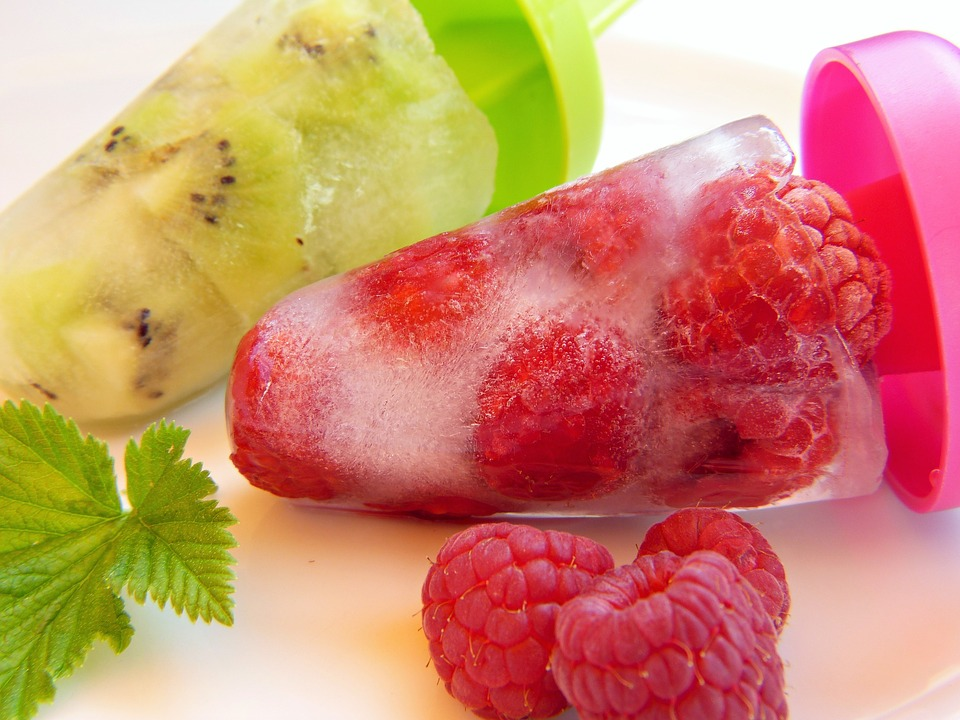

Ingredients :
- Ice cubes
- Rasberries
- Kwis
- Pop mould
Recipe:
- Blend the fresh fruits separately in a blender.
- Add some water to it to get a right consistency.
- Next add the flavored liquid to the pop molds.
- Freeze it for hours.
- Then enjoy the perfect homemade yummy ice pops !!!!!